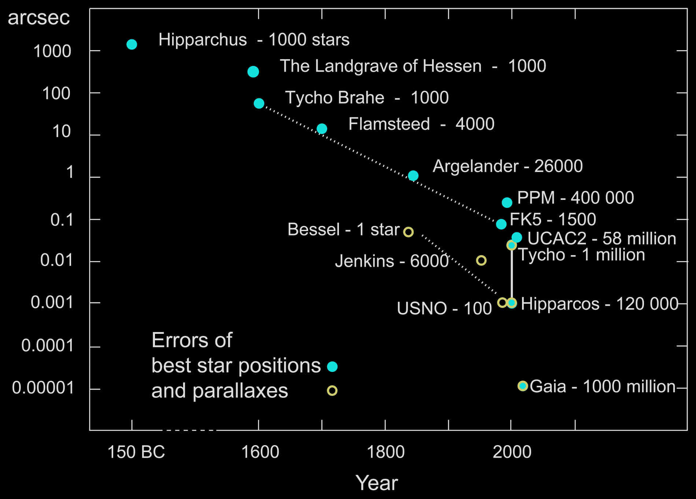
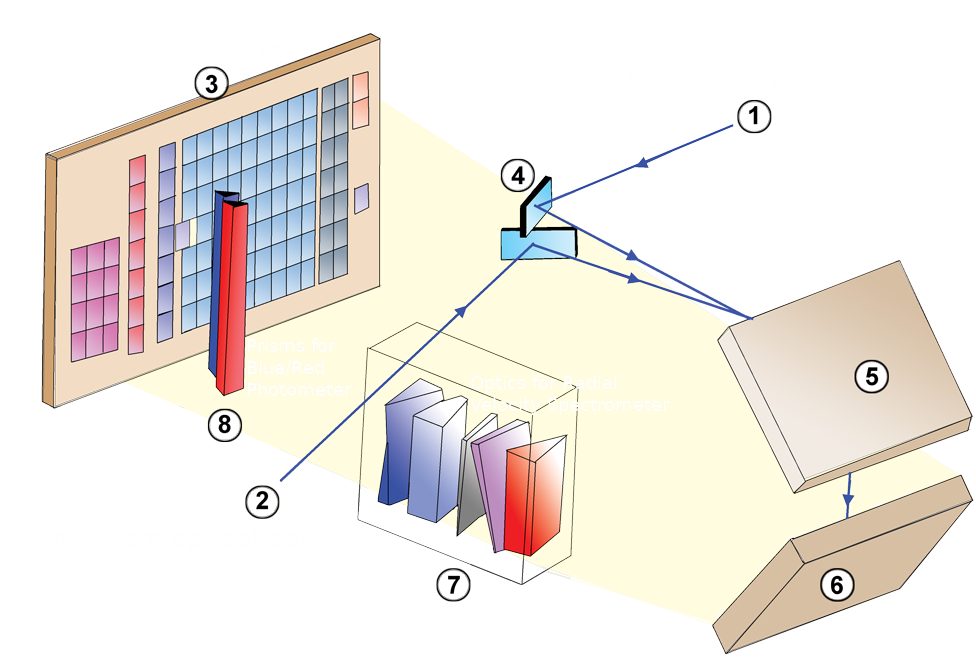
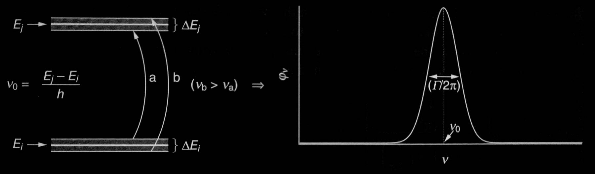
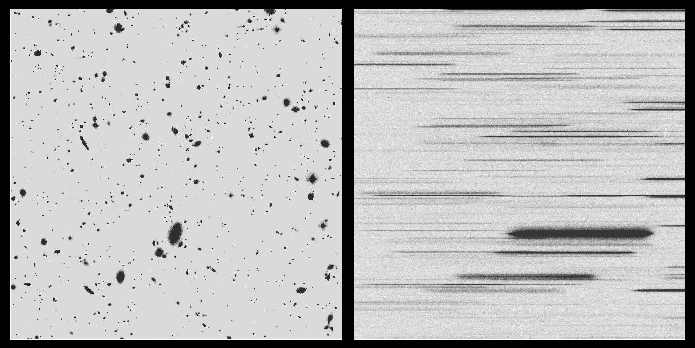

The Milky Way and Large Surveys
Heidelberg Physics Grad Days, 4-8 October 2021
Gregory Green
Why Study the Milky Way?
History of study of the Milky Way
Photometry
Fluxes of stars through broad filters
Sloan Digital Sky Survey (SDSS)
Pan-STARRS 1
2MASS
Dark Energy Camera Plane Survey (DECaPS)
LSST
(a.k.a. "The Future")
Spectroscopy
Flux as a function of wavelength
LAMOST
APOGEE (SDSS-IV)
SDSS-V

Pioneering Panoptic Spectroscopy
The next generation of Milky Way (+ local volume) spectroscopy
Components of SDSS-V

Milky-Way Mapper

Moving beyond our local corner of the Milky Way, to survey a large fraction of the Galaxy.
Local Volume Mapper

Spatially resolved, medium resolution ($R \sim 4000$) optical spectra of the interstellar medium throughout the Milky Way, the Magellanic Clouds, Andromeda, and other nearby galaxies.
Local Volume Mapper: the Orion Nebula

The Orion nebula will be observed at a resolution of 0.07 pc/spaxel.
Detailed information about chemistry & ionization of the interstellar medium.
Astrometry
Positions and velocities of stars
Astrometry: position & velocity


Parallax illustration
Parallax + proper motion illustration
How to practically measure parallax & proper motion?
Measuring absolute position on the sky to arcsecond ($=\frac{1}{3600} \, \mathrm{deg}$) precision is difficult.
Galileo & William Herschel proposed measuring angles between "double stars" (Herschel 1826).
→ Nearby stars have larger parallax than distant stars.
→ Angles between nearby stars easier to measure than absolute positions on sky.
Massively exaggerated example:
History of astrometry
Gaia: The Milky Way in 6D
ESA/Gaia/DPAC; A. Brown, S. Jordan, T. Roegiers, X. Luria, E. Masana, T. Prusti and A. Moitinho
How Gaia works
Gaia focal plane and instruments
Gravitational deflection of light by Solar System bodies
Radial Velocity Spectrometer

Optical element of RVS. EADS Astrium SAS, France
Basic properties
- RV measured using Doppler shift of atomic lines.
- Medium resolution: $R \equiv \lambda / \Delta\lambda \sim 11500$.
- Measures RV to <1 km/s for bright stars.
- Currently >7 million stars with measured RV. Will soon grow to >30 million.
Example spectrum on the CCD

Flux vs. wavelength

➞ Ca II triplet of absorption lines critical to determining RV.
Fundamental limitations on RV spectroscopy
Width of spectroscopic lines (Lorentz profile):
$$ \varphi \left( \nu \right) = \frac{ \Gamma / 4\pi^2 }{ \left(\nu-\nu_0\right)^2 + \left(\Gamma/4\pi\right)^2 } \, , $$
where
$$ \Gamma \sim \left( \mathrm{lifetime\ of\ atomic\ energy\ levels} \right)^{-1} \, , \\ \nu_0 = \mathrm{natural\ frequency\ of\ transition} \, . $$
Rotational broadening

Fast-rotating (above) vs. slowly rotating star (below). Both are 12000 K stars.
Similar effect caused by thermal motions in stellar atmosphere.
LeBlanc, "An Introduction to Stellar Astrophysics," 2010, p. 129.
Difficulties for Gaia's RV spectroscopy
Slitless spectroscopy
Simulation of JWST NIRCam slitless spectroscopy
Stellar spectra can overlap!
Mitigations:
- Scan the sky in different directions.
- Only look at narrow range of wavelengths.
⇒ Motivates choice of narrow wavelength range with several absorption lines (Ca II triplet), and medium (not high) dispersion.

{kind=link}
{kind=link}
Results from Gaia
Source density across the sky
Hertzsprung-Russel Diagram
With parallax, we can calculate absolute magnitude:
$$ M = m + \underbrace{ 5 \log_{10} \left( \frac{\varpi}{1\,\mathrm{mas}} \right) - 10 }_{ \equiv \mu } \, , \\ \mathrm{where} \\ m = \mathrm{apparent\ magnitude} \, , \\ \mu = \mathrm{distance\ modulus} \, . $$
Can study different stellar populations in detail.
→ E.g., unprecedented detail for the white dwarf cooling track.
Average radial velocity over the sky

Milky Way Rotation Curve
Rotation curves from Classical Cepheids (distances come from period-luminosity relation, velocities come from Gaia).
Gaia Collaboration, Katz+ (2018)
Rotational velocity ($v_{\phi}$) in the midplane of the Milky Way.
The rotation curve traces the gravitational potential of the Galaxy:
$$ v_{\mathrm{circ}}^2 \left( R \right) = R \frac{\partial \Phi}{\partial R} $$
All matter (baryonic and dark) contributes to the potential.
⇒ Possible to trace distribution of dark matter (if you can subtract baryonic contribution to the potential).
Velocities of local stars (<200 pc)

Stars are clumpy in velocity space.
Different ways to get clumps:
- Stars are born in clouds, and take time to disperse.
- Dynamical processes (e.g., resonances) shepherd stars into clumps.
- Accreted galaxies are kinematically distinct from Milky Way stars.
Gaia Enceladus (a.k.a. "The Sausage")
Plot $v_{\theta}$ vs. $v_r$ for metal-rich stars above the Milky Way midplane.
Two populations:
- Cold, rotating population: $v_r \sim 0, \ v_{\theta} \sim 200 \, \mathrm{km/s}$ → "thick disk"
- Population of stars on highly radial orbits: $v_{\theta} \sim 0$ → "The Sausage"
The Sausage dominates higher above the MW midplane.
The Sausage disappears at lower metallicity.
Merger 8-11 Gyr ago.
The "Antoja Spiral"
Stars near the midplane of the Galaxy feel a nearly linear vertical restoring force.
⇒ $\left( z, \, v_z \right)$ dynamics is similar to an anharmonic oscillator.
⇒ Perturbations of the Milky Way disk should cause phase spirals in $\left( z, \, v_z \right)$-space.
Perturbation by a close passage of the Sagittarius dwarf galaxy ~500 Myr ago?